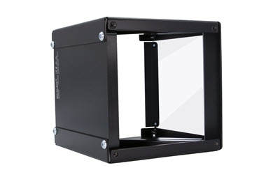

Basler Standard Light Coaxial-100x100-x#

Key Features#
- Internal LED controller with 2 operating modes
- Compatible with Basler SLP Strobe Controller
- Preconfigured hardware components
- Various sizes and LED colors
General Specifications#
| Basler Standard Light Coaxial-100x100-Red | Basler Standard Light Coaxial-100x100-White | Basler Standard Light Coaxial-100x100-Blue | Basler Standard Light Coaxial-100x100-Infrared | |
|---|---|---|---|---|
| Order Number | 2200000858 | 2200000796 | 2200000827 | 2200000889 |
| LED Color | Red | White | Blue | Infrared |
| Luminous Area | 100 x 100 mm | 100 x 100 mm | 100 x 100 mm | 100 x 100 mm |
| Basler Standard Light Coaxial-100x100-x | |
|---|---|
| Conformity | CE (includes RoHS), FCC, IP54, KC, UKCA Certificates for your light model For more information, see the Compliance section of the Basler website. |
LED Specifications#
| Coaxial Light Series 100x100-x | |
|---|---|
| Illuminance of White LEDs at 0 mm distance | 14 klux |
Electrical Specifications#
| Coaxial Light Series 100x100-x | |
|---|---|
| Required Power for Voltage Control Mode | 24 VDC ± 10 %, 11 W |
| Required Current for Current Control Mode | Red, White, and Blue: 600 mA Infrared: 900 mA |
| Recommended max. LED Current for Strobe Mode (50 % Duty Cycle, 100 ms Pulses) | Red, White, and Blue: 1200 mA Infrared: Must never be used. |
| Recommended max. LED Current for Strobe Mode (25 % Duty Cycle, 20 ms Pulses) | Red, White, and Blue: 1800 mA Infrared: Must never be used. |
| Recommended max. LED Current for Strobe Mode (10 % Duty Cycle, 5 ms Pulses) | Red, White, and Blue: 2400 mA Infrared: 1800 mA |
| Infrared only: Recommended max. LED Current for Strobe Mode (1 % Duty Cycle, 100 µs Pulses) | 2700 mA |
Mechanical Specifications#
| Coaxial Light Series 100x100-x | |
|---|---|
| Dimensions (H x W x D) | 150 mm x 150 mm x 151 mm |
| Weight | 1200 g |
| Material | Black aluminium housing, antireflex cover and semitransparent mirror both made of glass |
| Connector | M8 socket, 4-pin male connector |
Coaxial Light Dimensions#
Connector Pin Numbering#
Info
The pin assignment of the light's connector differs depending on whether you want to use the internal or an external controller. For more information, see the respective tables in the Installation chapter.
Environmental Requirements#
| Temperature During Operation | 10–30 °C (50–86 °F) |
| Humidity During Operation | 30–70 % |